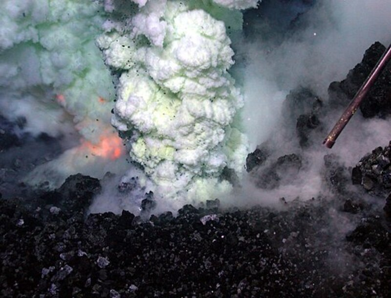

Подводный вулкан — разновидность вулканов. Эти вулканы расположены на дне океана. Большинство современных вулканов расположено в пределах трёх основных вулканических поясов: Тихоокеанского, Средиземноморско-Индонезийского и Атлантического. Как свидетельствуют результаты изучения геологического прошлого нашей планеты, подводные вулканы по своим масштабам и объёму поступавших из недр Земли продуктов выброса значительно превосходят вулканы на суше. Если на суше ежегодно из 20—30 вулканических извержений поступает в среднем до полутора кубических километров расплавленной магмы в год, то за это же время из подводных вулканов извергается материала в 12—15 раз больше. Жизнь в приповерхностных водах океана, от которой зависит и объём поглощаемых океаном парниковых газов, поддерживается активностью подводных вулканов.
Происходит это потому, что подводные вулканы снабжают фитопланктон соединениями железа, необходимыми для фотосинтеза. Частицы железа — необходимый элемент для большинства пищевых цепочек — очень редки в поверхностных водах океана. Прежде считали, что попадают они туда в основном с водами рек и ручьёв. Учёные из университета Миннесоты (США) доказали, что большая часть железа, необходимого для фитопланктона, может поступать на поверхность с самого дна. Ранее предполагалось, что большая часть выбрасываемого подводными вулканами железа оседает на дне в неорганической форме. С помощью дистанционно управляемых глубоководных аппаратов исследователи собрали образцы частиц из разных вулканически активных регионов Тихого океана. Вулканы создают так называемые гидротермальные струи — вода в них достигает температуры нескольких сотен градусов, однако из-за огромного давления не превращается в пар. Эти гидротермальные струи содержат в себе большое количество растворённых веществ, в том числе и ионов двухвалентного железа, которое более пригодно для живых организмов, чем трёхвалентное окисленное железо. Эти ионы, как удалось показать исследователям, в дальнейшем вступают в реакции с органическими соединениями, растворёнными в воде, образуют небольшие частицы субмикронного размера, и уносятся подводными течениями. Открытие может привести к пересмотру существующих мнений о круговороте железа и углерода в океане. Вероятно, такой пересмотр повлияет на опытные работы по «удобрению» океана соединениями железа в целях борьбы с глобальным потеплением.
Если над вулканическим очагом расположен водоём, при извержении пирокластический материал насыщается водой и разносится вокруг очага. Отложения такого типа, впервые описанные на Филиппинах, сформировались в результате извержения в 1968 вулкана Тааль, находящегося на дне озера; они часто представлены тонкими волнистыми слоями пемзы. В результате деятельности подводных вулканов могут образовываться острова, например, Реюньон — вулканический остров в Индийском океане.